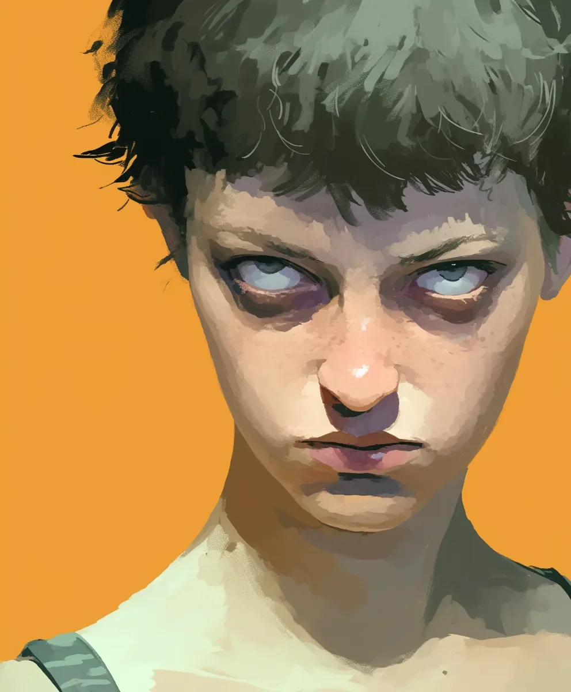

그녀의 머리 위에서 형광등이 벌레 소리처럼 가냘프고 병적으로 윙윙거리며, 그녀의 피부를 상한 우유 빛깔로 물들였다. 땀방울이 턱에 매달려, 마치 그녀의 몸에서 완전히 벗어나고 싶다는 듯 떨렸다. 그녀는 비닐 의자 가장자리에 뻣뻣하게 앉아 있었다. 등은 굳어 있었고, 주먹은 분필로 조각한 것처럼 보일 정도로 세게 무릎에 박혀 있었다.
[The fluorescent light hummed above her, sickly and insect-thin, painting her skin the color of spoiled milk. A drip of sweat clung to her jaw, trembling as if it wanted to escape her body altogether. She sat rigid on the edge of the vinyl chair, spine locked, fists pressed into her knees so hard her knuckles looked carved from chalk.]
그녀의 눈은 믿을 수 없을 정도로 미동도 없이, 어딘가 잘못된 채, 위쪽을 노려보고 있었다. 눈의 흰자위는 젖은 대리석처럼 희미한 광택이 흘렀지만… 그 아래에서는 마치 얼음 밑에서 몸부림치는 물고기처럼 무언가가 움직였다.
[Her eyes, impossibly still, wrong, glared upward. The whites had the faint sheen of wet marble, and yet…something moved beneath, like a fish writhing under ice.]
“눈 깜빡여요,” 간호사가 길고양이를 달래듯 부드럽게 다시 속삭였다. 그녀의 손에 들린 클립보드가 떨렸다. 너무 세게 쥔 손가락 때문에 펜이 잉크 자국을 길게 남겼다.
[“Blink,” the nurse whispered again, soft as someone coaxing a stray cat. The clipboard in her hand trembled; the pen left a streak of ink where her fingers clenched too tightly.]
소녀는 대답이 없었다. 그녀의 목구멍은 마치 날카로운 물체가 안에 박힌 것처럼, 느리고 경련적으로 꿈틀거리며 침을 삼켰다.
[The girl didn’t answer. Her throat worked in slow, convulsive swallows, as though words had become sharp objects lodged inside her.]
그러다 그녀의 입술이 거의 알아차릴 수 없을 정도로, 그녀의 것이 아닌 듯한 방식으로 말려 올라갔다.
[And then her lip curled, almost imperceptibly, in a way that didn’t belong to her.]
그건 잘못된 종류의 미소였다. 마치 칼집에서 칼을 뽑아내는 것처럼, 너무나 느리고 의도적으로 입꼬리가 늘어났다.
[It was the wrong kind of smile. It stretched too slowly, too deliberately, like a knife being unsheathed.]
간호사는 뒤로 물러섰다. 광택 나는 리놀륨 바닥 위에서 고무 밑창 한쪽이 끽, 소리를 냈다.
[The nurse stepped back. One rubber sole squeaked on the polished linoleum.]
소녀의 목 안에서 무언가 움직였다. 마치 근육들이 처음으로 스스로를 익히는 것처럼, 부자연스러운 경련이 홱, 일어났다.
[Something in the girl’s neck shifted, a jerk, an unnatural tic, as if her muscles were learning themselves for the first time.]
그녀는 4분 동안 눈을 깜빡이지 않았다.
[She hadn’t blinked for four minutes.]
그녀 안에 있는 무언가는 참을성이 있었다. 참을성 있고, 호기심이 많았다. 그녀가 마치 공기의 맛을 보려는 듯 콧구멍을 벌름거리는 모습에서, 피부 아래 힘줄이 전선처럼 도드라지며 손가락이 하나씩 펴지는 모습에서 그것을 느낄 수 있었다.
[The thing inside her was patient. Patient and curious. You could feel it in the way her nostrils flared as if tasting the air, the way her fingers uncurled one by one, tiny tendons standing out like wires under her skin.]
마침내 그녀가 입을 열었을 때, 그녀의 목소리는 두 가지 음색으로 동시에 흘러나왔다. 그녀 자신의 것과 다른 무언가의 목소리가, 마치 녹음기가 늘어진 테이프를 재생하는 것처럼 불완전하게 겹쳐졌다.
[When she finally spoke, her voice came in two tones at once, her own and something else’s, layered imperfectly, like a tape recorder warping its playback.]
“거의 다 됐어,” 그것이 말했다.
[“Almost ready,” it said.]
그리고 그녀는 더 환하게 웃었다. 입술은 마치 안에서 잡아당기는 것처럼 늘어났다. 입꼬리가 종이가 찢어지듯 갈라졌다.
[And she smiled wider. Her lips stretched as if pulled from the inside. The corners of her mouth split like paper tearing.]